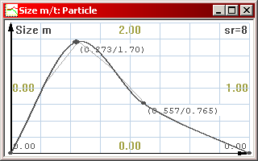
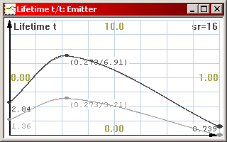
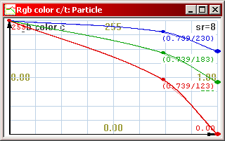

The Basics
If this is the first time you’re using the
particle editor, it’s advised to read this section first.
"OK,
I’ve started the editor and set my display driver settings. Now
what?"
Before you can do anything, you need to either open
and modify an existing particle effect, or create a new one by pressing
New. For now, try opening one of the example .PSE files and read on.
Editing an effect
Particle effects consist of two basic elements: Particles and Emitters.
Particles are the things you see flying on the screen, and Emitters are
the gizmos that spew them out.
However, before a particle and an emitter become a working effect, an Emission
must be created, which determines which particles are spawned by which
emitters. You can see how these are arranged in the example particle files
provided with the editor.
Previewing
the effect
When editing an effect, you can
preview it by pressing F2, or by clicking the “Run Preview”
button in the top toolbar. When in preview mode, you can do the following:
- Press F2 again to restart the effect
- Press F3 to pause / continue the effect (you can still rotate the
view)
- Use
the arrow keys to rotate the view around the effect. Use Page
Up and Page Down to zoom in and out.
- Hold
down Ctrl when rotating and zooming to speed up the movement
- Hold
down Shift when rotating and zooming for slow, precise movement
In preview mode, there are
some informative numbers in the upper right corner of the screen.
- FPS:
The framerate counter. With this, you can measure how much CPU your
particle effect is using.
- Particles:
The number of particles currently active in the effect. If this number
turns red, it means that the set maximum set limit has been reached
and exceeded.
- Max: The peak number of particles that have been active in the
effect. If this number turns red, it means that the maximum set limit
has been reached.
- Radius:
The radius of the whole particle effect in meters. The radius is
determined by the particle furthest away from the emitter origo. It is
advisable to avoid the effect from growing too large due to loose
particles traveling too far away from the center.
When you’re finished viewing the effect, press F4
to close the preview. Note that any changes you make to the effect, while
the preview window is open, won’t be applied before you’ve
closed the view and opened it again.
Editing graphs
As you may have noticed at this point, some buttons pop up a window
containing an editable graph when clicked. This is how many of the
particle effect’s properties are defined. Unlike constant values,
graphs smoothly change the value of the parameter through time. Graphs can
be easily edited by moving, adding and deleting nodes, the points
that are connected by the line.

A Single graph
Actually the graphs themselves don’t determine the final values
in the particle effect. The graph is in fact sampled by the
particle engine and converted to a set of delta-reduced values. The thin
line trailing along the graph represents the sampled result. To change the
sample rate of the graph, press / and * on the keypad. The sample
rate (sr) is displayed in the upper right corner of the graph window.
Adjust the value and see how it affects the thin line. To optimize the
particle effect it is a good idea to use an as low sample rate as
possible. If you use the graph for a constant or a linear ramp value, a
sample rate of 2 is enough. If, on the other hand, you want to use a very
complex graph with small rapid changes, you may need to increase its
sample rate.
Some Emitter graph parameters contain two graphs instead of one.
This means that the actual values are randomized between the two
graphs whenever a particle is emitted. The further the two graphs are from
each other, the more diversity the resulting values have. If the graphs
overlap completely, there is no randomization.

A Double graph. The final value is picked at random between the two
graphs.
Finally, the particle coloring and the emitter lights have a Color
Graph. There are three graphs, one for each color element: Red, Green and
Blue.

An RGB color graph.
The graph window can be scaled freely like any window by clicking and
dragging its corners. When you close the graph window, its contents are
automatically saved.
Graphs can be copied to and pasted from the clipboard between files.
Please note that this only works between respective graphs. You
cannot copy a Size Graph to a Color Graph.
You can edit the graphs by doing the following:
- To zoom the graph display vertically in and out, press +
and - on the keypad, or click the Zoom In and Zoom Out buttons
on the toolbar.
- To
adjust the resolution of the background grid, press Ctrl-G or
click the Grid Resolution button on the toolbar. The grid is
just a visual aid.
- To
insert a new node to the graph, double click on the graph with
the left mouse button at the point where you want the node
inserted. To remove a node, select the node by clicking on it
with the left mouse button, and press Del.
- To
move a node, click and drag it with the left mouse button. If
you press and hold Shift while dragging nodes, all the nodes in
the respective position of the other graphs will also move (only
applicable if the value has multiple graphs). If you hold down Ctrl
while dragging nodes, the node’s movement is restricted to
vertical axis.
- If
you click and drag a node with the right mouse button, the
entire graph will shift up and down.
- To
enter a numerical value for a node or set of nodes, select the
node by clicking on it with the left mouse button, then press N.
If the graph is a Color Graph, you can edit the color values with a
Windows color picker by pressing C.
- To scale the entire graph vertically, hold down Ctrl and
drag a node with the right mouse button.
|